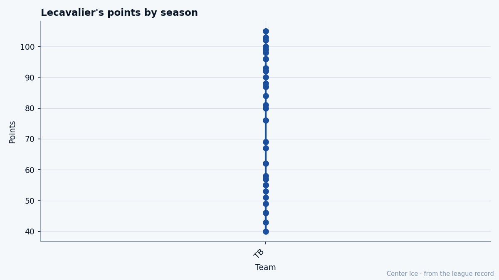

TB
TBThe Injury Diaries: Vincent Lecavalier, a leg until April, and a shelf already holding 8
The first overall pick from 1998 is the highest-pace center in the league at 146. His return date is 2005-04-01. Tampa Bay already carries the most injured men of any club.
 Tomáš VránaProfile writer · The Sweater
Tomáš VránaProfile writer · The Sweater Vincent Lecavalier89 last played on a night between February 16 and February 19. He has 105 points in 59 games, a pace of 146, and the highest pace of any center in the league. His return date is April 1. Tampa Bay leads the Southeast at 31-18-6, 78 points, and already has 8 men on the shelf.
Vincent Lecavalier89 last played on a night between February 16 and February 19. He has 105 points in 59 games, a pace of 146, and the highest pace of any center in the league. His return date is April 1. Tampa Bay leads the Southeast at 31-18-6, 78 points, and already has 8 men on the shelf.
The leg joins a list that already carries  Cory Stillman83 (wrist, out until March 5) at a grade of 84,
Cory Stillman83 (wrist, out until March 5) at a grade of 84,  Francis Bouillon75 (leg, until April 25), Bill Lindsay73 (concussion, until March 11),
Francis Bouillon75 (leg, until April 25), Bill Lindsay73 (concussion, until March 11),  Randy Robitaille73 (wrist, until February 25),
Randy Robitaille73 (wrist, until February 25),  Tim Taylor69 (hip, until March 13), and
Tim Taylor69 (hip, until March 13), and  Nolan Pratt72 (head, until February 23). None of them carries the 90 that Lecavalier does, and none of them produces at 1.78 points a night.
Nolan Pratt72 (head, until February 23). None of them carries the 90 that Lecavalier does, and none of them produces at 1.78 points a night.

What the Book says about a man past his own ceiling
The Bureau's Development Index has Lecavalier at +1 on the season. His overall reads 90, which is his base of 90 nudged up one. His potential is 86. The Book says he peaked, and that he sits 4 grades above where it thinks he finishes.
At 24, that verdict arrives 6 years earlier than the typical center. The gap is not the same as the ones at 33 (Sanderson, 28 grades) or 30 (Bertuzzi, 37 grades). Four grades at 24 means the Bureau sees a player climbing into a grade it does not think he can hold. The Index is up 1 this week. He is scoring at 146, which is 10 points of pace above the next center on the list (Modano at 136, Comrie at 124, Fedorov at 122).
His per-attribute grades make the argument for him: HERO 98, SPEE 97, SHPW 96, ACCE 95, AGIL 94, BALA 92. He is the fastest big man in the league, shoots the puck at a 96, and carries a fighting grade of 51 that nobody forces him to use because opponents cannot catch him. He shoots left, stands 6'4", 205 lb, and plays 21.9 minutes a night.
His weaknesses sit where a center's weaknesses sit at a pace of 146: FIGH 51, SPBI 52, INJU 53. He carries a broken foot from January 2001 that cost him 14 games. The Bureau rates his durability at 53.
The road from Île-Bizard
Lecavalier grew up on the North Shore of Montreal, in Île-Bizard. He played in the 1994 Quebec International Pee-Wee Hockey Tournament. He went to the Rimouski Océanic of the QMJHL for two years and won the Michel Bergeron Trophy as the league's top rookie forward, and the RDS Cup as the top rookie overall.
Tampa Bay took him first overall in 1998. The new owner, Art Williams, stood in front of a room of reporters and said the kid would be the Michael Jordan of hockey. Lecavalier was 18.
He wore the captaincy as a teenager. Lightning management stripped it before the 2001-02 season because they decided he was too young for the letters even with the talent. He finished 2000-01 with 51 points in 68 games. He was still 21 and already carrying a public verdict on whether he could lead.
In August 2004, he won the MVP of the World Cup of Hockey for the Canadian team that won the tournament. He scored on whoever the Canadians needed him to score on, and he did it while his NHL team finished the previous season at 117 points out of playoff position. The trophy was the first thing anyone in Tampa Bay had put in a case since the franchise started.
The room without him
Tampa Bay's best man tonight is  Nikolai Khabibulin91 at 92.
Nikolai Khabibulin91 at 92.  Martin St. Louis86 is 87 and plays right wing.
Martin St. Louis86 is 87 and plays right wing.  Fredrik Modin81 is 82 on the left.
Fredrik Modin81 is 82 on the left.  Dan Boyle80 is 81 on the blue line.
Dan Boyle80 is 81 on the blue line.
Without him: St. Louis has to carry the top center minutes. He is 33. He scored 90 points this season at 22.5 minutes a night, a pace of 123, and he did it beside Lecavalier. The Bureau has him at 87 with potential 87, which means the room does not get better by swapping the man at center for a 33-year-old winger.
Cory Stillman is 84 and his wrist returns March 5. The Lightning have been playing with him on the shelf since late January. He brings the left-wing game and a pace that would cover roughly half of what Lecavalier was doing.
The trade deadline is what the calendar has as 2005-03-19, 26 days away. Tampa Bay at 78 points with 8 men out and their first overall pick not returning until April 1 has a month to decide what they want to be in April.
The contract nobody else has
Lecavalier is paid $2.60M with 2 years left on the deal. His pace of 146 puts him in a class with  Peter Forsberg89,
Peter Forsberg89,  Mike Modano86 ($6.70M), and
Mike Modano86 ($6.70M), and  Joe Sakic84. The Bureau's Contract Ledger would list him as the cheapest center in the league producing at a 90 overall grade.
Joe Sakic84. The Bureau's Contract Ledger would list him as the cheapest center in the league producing at a 90 overall grade.
Tampa Bay's team salary is $45.8M this season. The club gets 78 standings points for it, which works out to $0.59M per point, the cheapest rate in the league. That number is about to get worse: the club earns fewer points without its first overall pick, the $45.8M does not change, and the per-point cost rises.
What the shelf says
The Lightning will play at least 22 games before April 1 without their best center. The season's regular schedule runs through late March. Lecavalier returns for what the record would call the postseason, if Tampa Bay gets there.
At 78 points in 60 games, they are 26 points ahead of fifth-place Florida (52). The lead in the Southeast is 1 point over Washington (77).
He is 24. He is past his ceiling. He is the best center in the league. He comes back in April, if the leg says April.